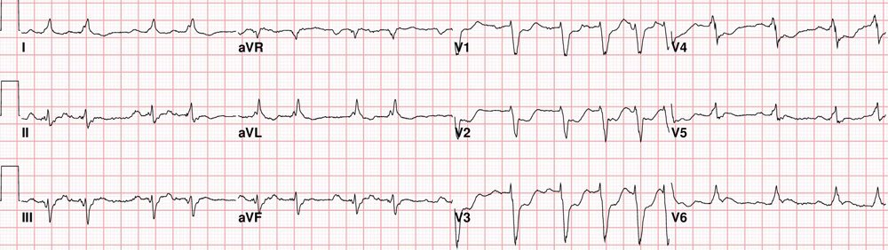
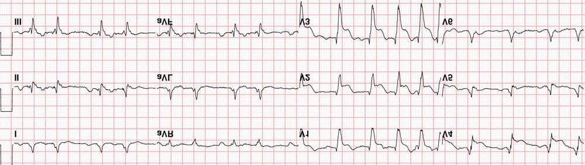
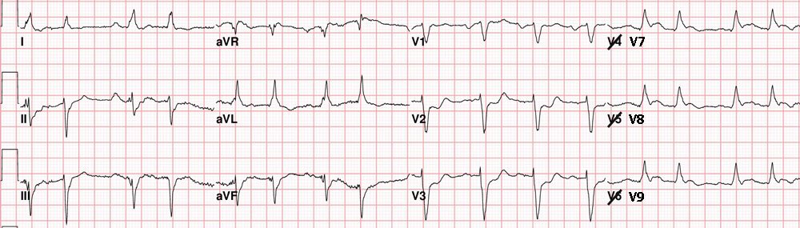

03/08/2017 — ST chênh xuống ở chuyển đạo trước tim phải ở bệnh nhân đau ngực
Bản dịch tiếng Việt của bài "Right precordial ST depression in a patient with chest pain" – Dr. Smith’s ECG Blog. Giữ nguyên toàn bộ 3 hình ảnh của bản gốc.
Ca bệnh này do Sam Ghali (@EM_RESUS) cung cấp. Cảm ơn Sam!
Một người đàn ông 70 tuổi gọi 911 sau khi đột ngột bị đau ngực dữ dội. Đây là điện tâm đồ 12 chuyển đạo của ông:


Kết quả đọc bằng máy tính: “Bất thường ST không đặc hiệu, cân nhắc thiếu máu cục bộ dưới nội tâm mạc thành trước”
Sóng R rất kém ở V1-V4, gợi ý nhồi máu cơ tim thành trước cũ. Đáng chú ý là có ST chênh xuống sâu ở V1-V4, chính điều này đã dẫn tới kết quả đọc của máy tính. Trước hết, thiếu máu cục bộ dưới nội tâm mạc không định khu được trên điện tâm đồ 12 chuyển đạo. Điều này có nghĩa là ngay cả khi các chỗ ST chênh xuống ở chuyển đạo trước tim phải này đúng là biểu hiện của thiếu máu cục bộ dưới nội tâm mạc, chúng cũng không nhất thiết cho biết vùng thiếu máu là thành trước. Các thuật toán máy tính vẫn còn lạc hậu về mặt này.
Nhưng câu hỏi thực sự đặt ra là: Các chỗ ST chênh xuống ở chuyển đạo trước tim này có phải là hậu quả của thiếu máu cục bộ dưới nội tâm mạc không?
Có hai nguyên nhân chính gây ST chênh xuống do thiếu máu cục bộ:
1) thiếu máu cục bộ dưới nội tâm mạc
2) soi gương (reciprocal) với ST chênh lên ở thành đối diện
Ở đây có các sóng R rõ ràng kèm ST chênh xuống rõ rệt ở hầu hết các chuyển đạo trước tim. Hãy để ý rằng mức chênh xuống lớn nhất ở các chuyển đạo V2-V4. Đây là một điểm tinh tế nhưng then chốt. ST chênh xuống ở chuyển đạo trước tim rất thường gặp trong thiếu máu cục bộ dưới nội tâm mạc, nhưng trong những trường hợp đó, vectơ chênh xuống tối đa thường hướng về V4-V6.
Hình ảnh ST chênh xuống ở chuyển đạo trước tim trên điện tâm đồ này (và trong bối cảnh lâm sàng này) phải lập tức làm dấy lên nghi ngờ STEMI thành sau!
STEMI thành sau xảy ra ở khoảng 15-20% số ca nhồi máu cơ tim cấp, nhưng trong đại đa số trường hợp, nó đi kèm với STEMI thành dưới (dưới-sau) hoặc thành bên (sau-bên) (1). Vì vậy, việc tiếp theo tôi sẽ làm là soi kỹ các chuyển đạo dưới (II, III, aVF) và các chuyển đạo bên cao (I & aVL) để tìm bất kỳ bằng chứng kín đáo nào của STEMI đi kèm. Điều này có thể giúp khẳng định chẩn đoán. Nhưng nếu không có – thì ít nhất bạn đang đứng trước một STEMI thành sau đơn độc cho tới khi chứng minh được điều ngược lại.
Trong các ca STEMI thành sau điển hình (đi kèm với tổn thương thành dưới hoặc thành bên), những thay đổi điện tâm đồ thành sau đi kèm không làm thay đổi quyết định tái tưới máu, nên có thể bạn thậm chí không hề để ý tới chúng. Nhưng nếu nhồi máu cơ tim chỉ khu trú đơn độc ở thành sau [3-11% số ca (2)], thì việc nhận ra những thay đổi ở chuyển đạo trước tim này là then chốt để đưa ra chẩn đoán!
Một điều thú vị nữa cần lưu ý là có ST chênh lên ở V6 trên điện tâm đồ. Ý nghĩa của điều này là gì? Bạn thường thấy dấu hiệu này trong STEMI thành sau (kể cả STEMI thành sau đơn độc), và đó là kết quả của tổn thương lan tới phần phía sau của thành bên.
Nếu bạn “lật” điện tâm đồ 180 độ theo chiều ngang và 180 độ theo chiều dọc thì nó giống như được ghi từ mặt đối diện (mặt sau) của tim. Bạn có thể làm điều này với điện tâm đồ trên giấy bằng cách giơ nó lên trước nguồn sáng, vì khi đó bạn sẽ nhìn xuyên qua mặt sau của tờ giấy.
Đây là điện tâm đồ của bệnh nhân chúng ta sau khi lật:


Một biện pháp hỗ trợ chẩn đoán khác là ghi các chuyển đạo phía sau. Đây là các chuyển đạo đặt trên lưng bệnh nhân, bên dưới xương bả vai trái, và nhìn thẳng vào thành sau. Bạn có thể di chuyển bất kỳ ba chuyển đạo nào. Tôi thường dùng V4-V6 để chúng trở thành các chuyển đạo V7-V9 như thấy dưới đây:


Kết cục của ca bệnh:
Bệnh nhân được cho dùng aspirin, liều nạp ticagrelor, và phòng thông tim (cath lab) được kích hoạt. Kết quả phát hiện một tổn thương huyết khối cấp, tắc 100% ở đoạn giữa động mạch mũ trái (LCx).
Kết luận:
Không ai bỏ sót các chỗ ST chênh xuống ở chuyển đạo trước tim trong ca này. Vấn đề thường không nằm ở việc nhận ra những bất thường này mà ở việc xác định nguyên nhân của chúng. Đáng tiếc là bệnh nhân STEMI thành sau đơn độc thường không được điều trị tái tưới máu thích hợp, chỉ đơn giản vì nhồi máu ở vùng giải phẫu này của cơ tim biểu hiện khác đi trên điện tâm đồ 12 chuyển đạo chuẩn. Nhiệm vụ của chúng ta là nhận diện thực thể này và bảo đảm những bệnh nhân này được chăm sóc giống như khi họ bị STEMI ở bất kỳ vùng chi phối của động mạch vành nào khác.
Mẹo nhận biết STEMI thành sau cấp:
1. Nhận diện hình ảnh (pattern recognition) là một trong những cơ chế mạnh mẽ nhất – và thường là vô thức – giúp chúng ta đọc điện tâm đồ. Hãy ghi nhớ hình ảnh kinh điển này của STEMI thành sau trên điện tâm đồ 12 chuyển đạo chuẩn.
2. Hãy nhớ mẹo “lật” điện tâm đồ. Mặc dù nó thực ra không bổ sung thêm giá trị chẩn đoán nào, nó có thể giúp bạn có cảm nhận trực quan tốt hơn về những gì thực sự đang xảy ra ở thành sau.
3. Nếu bạn lo ngại STEMI thành sau, bạn luôn có thể ghi điện tâm đồ phía sau. ST chênh lên chỉ 0,5 mm ở bất kỳ chuyển đạo nào trong V7-V9 dường như là nhạy và đặc hiệu nhất. Chỉ cần lưu ý rằng mặc dù độ nhạy của tiêu chuẩn này tốt, nó không đạt 100%. Có thể có những ca STEMI thành sau cấp đơn giản là không thỏa tiêu chuẩn này.
4. Đừng quên siêu âm tim. Một rối loạn vận động thành ở thành sau (thành dưới-đáy) sẽ khẳng định nhồi máu cơ tim thành sau. Mặc dù trong ca này không cần đến nó để chẩn đoán, siêu âm tim có thể là một biện pháp hỗ trợ chẩn đoán khá mạnh.
5. Hãy hiểu rằng, rốt cuộc, không có dấu hiệu điện tâm đồ nào kể trên sẽ đủ thường xuyên giúp chẩn đoán STEMI thành sau. Đó chính là hạn chế của điện tâm đồ trong chẩn đoán tắc mạch vành cấp. Khái niệm quan trọng nhất cần nhớ là: nếu về mặt lâm sàng bạn cảm thấy bệnh nhân đang bị đau ngực do thiếu máu cục bộ và bạn không thể kiểm soát được triệu chứng bằng điều trị nội khoa, bạn phải cân nhắc nghiêm túc rằng mình đang đối mặt với một tình trạng tắc mạch vành cấp sẽ có lợi từ tái tưới máu cấp cứu!
Lưu ý rằng Hướng dẫn điều trị STEMI của Trường Môn Tim mạch Hoa Kỳ (American College of Cardiology) và Hội Tim mạch Hoa Kỳ (American Heart Association) nêu rõ rằng thuốc tiêu sợi huyết thực sự được chỉ định trong tình huống này khi nghi ngờ nhồi máu cơ tim thành sau thực sự (thành dưới-đáy). Vì vậy, việc xử trí những ca này như STEMI hoàn toàn nằm trong phạm vi khuyến cáo của hướng dẫn (6).
Tài liệu tham khảo:
1. Brady WJ, Erling B, Pollack M, Chan TC. Electrocardiographic Manifestations: Acute posterior wall myocardial infarction. Tạp chí J Emerg Med 2001; 20:391-401.
2. Smith S, Zvosec Deborah, Sharkey Scott. The ECG in Acute MI – An Evidence Based Manual of Reperfusion Therapy (sách), năm 2002.
3. Van Gorselen EO, Verheugt FW, Meursing BT, Oude Ophuis AJ. Posterior myocardial infarction: the dark side of the moon. Tạp chí Neth Heart J. 2007; 15: 16-21.
4. Wung SF, Drew BJ. New electrocardiographic criteria for posterior wall myocardial ischemia validated by percutaneous transluminal coronary angioplasty model of acute myocardial infarction. Tạp chí Am J Cardiol 2001; 87:970-4; A4.
5. Matetzky S, Friemark D, Feinberg MS, và cs. Acute myocardial infarction with isolated ST-segment elevation in posterior chest leads V7-V9: “hidden” ST-elevations revealing acute posterior infarction. Tạp chí J Am Coll Card 1999; 34:748-753.
6. O’Gara và cs. 2013 ACCF/AHA Guideline for the Management of ST-Elevation Myocardial Infarction: A Report of the American College of Cardiology Foundation/American Heart Association Task Force on Practice Guidelines. Tạp chí Circulation, tháng Mười Hai năm 2012.
Thêm bình luận của Smith
ST chênh xuống đơn độc ở chuyển đạo trước tim (không kèm ST chênh lên) trong hội chứng vành cấp (ACS)
ST chênh xuống (STD) đơn độc ở chuyển đạo trước tim có thể do thiếu máu cục bộ dưới nội tâm mạc (thường ở V4-V6) hoặc là hình ảnh soi gương của ST chênh lên thành sau (STD tối đa ở V1-V4). Có một số nghiên cứu gián tiếp cho thấy tỷ lệ STEMI khu trú đơn độc ở thành sau, và tỷ lệ này dao động từ 3% đến 11%.(1, 2)
Một nghiên cứu phụ lớn của thử nghiệm TRITON-TIMI 38 (tài liệu tham khảo 2.5), gồm 3534 ca STEMI thực sự, cho thấy 1/3 số ca nhồi máu cơ tim cấp biểu hiện bằng “ST chênh xuống đơn độc ở chuyển đạo trước tim” (không có STE ở nơi khác) ở các chuyển đạo V1-V4 và được chụp mạch vành không khẩn cấp (thời gian trung bình 29 giờ) hóa ra có tắc mạch vành cấp (n = 314). Những bệnh nhân này có kết cục xấu hơn so với bệnh nhân có ST chênh xuống mà không tắc mạch; một nửa số ca này là động mạch mũ. Vì khoảng 25% động mạch bị tắc sẽ tự tiêu huyết khối (autolysis) trong vòng 24 giờ, nhiều bệnh nhân có động mạch thông vào lúc chụp hẳn đã bị tắc vào thời điểm ghi điện tâm đồ, nên ước tính một nửa số bệnh nhân có STD ở V1-V4 bị tắc mạch cấp. Chỉ một số ít trong 314 bệnh nhân này được hưởng lợi từ điều trị tái tưới máu cấp cứu.
Nếu STD tối đa ở V1-V4, thì nó là do tắc mạch ảnh hưởng tới thành sau (nay thường được gọi là thành bên, hoặc thành dưới-đáy).(3) Một nghiên cứu khác, nhỏ hơn một chút, trên các ca NSTEMI cũng cho kết quả gần như giống hệt.(4)
STEMI thành sau cấp: sóng T dương hay đảo ngược? Có một quan niệm sai lầm rằng nhồi máu cơ tim thành sau cấp biểu hiện bằng STD ở chuyển đạo trước tim thì phải có sóng T dương; trên thực tế, sóng T có thể đảo ngược hoặc dương. Tiêu chuẩn kinh điển của nhồi máu cơ tim thành sau, gồm ST chênh xuống, sóng R nổi bật và sóng T dương ở các chuyển đạo trước tim phải, nhiều khả năng phản ánh một nhồi máu cơ tim bán cấp, đã tiến triển.(5) Việc nhấn mạnh vào các tiêu chuẩn này có thể làm chậm việc nhận ra hình ảnh thành sau thực sự cấp tính: ST chênh xuống ở các chuyển đạo trước tim phải, không có sóng R đáng kể, và thường kèm sóng T đảo ngược hoàn toàn (6).
Cơ chế quyết định hướng của sóng T: Các chuyển đạo trước phản ánh tổng hợp hoạt động điện từ cả thành trước ở gần và thành sau ở xa hơn. Trong nhồi máu cơ tim thành sau cấp, thành sau có sóng T tối cấp với vectơ hướng ra sau (âm ở các chuyển đạo trước). Tổng của vectơ dương từ các chuyển đạo trước và vectơ âm từ các chuyển đạo sau có thể tạo ra sóng T dương hoặc âm ở các chuyển đạo trước.
Khi tiến triển, hoặc đặc biệt là sau tái tưới máu, sóng T trong STEMI thành sau luôn dương ở các chuyển đạo trước tim, và to ra: vectơ sóng T của thành sau quay ra trước, và khi kết hợp với sóng T dương của thành trước thì luôn tạo ra sóng T dương ở các chuyển đạo trước. Do đó, tái tưới máu đặc biệt tạo ra các sóng T cao, nhọn ở chuyển đạo trước, mà chúng tôi gọi là “sóng T tái tưới máu thành sau” hay hội chứng Wellens của thành sau.(7) Trước đây, các tác giả đã nhầm lẫn giữa nhồi máu cơ tim thành sau do tắc cấp (có thể có sóng T dương hoặc đảo ngược) với, mặt khác, nhồi máu cơ tim thành sau kéo dài hoặc đã tái tưới máu (cả hai đều thực sự có sóng T dương).
Có sóng R cao ở các chuyển đạo trước tim phải trong STEMI thành sau cấp không? Tương tự, sóng R cao ở V1 hoặc V2 không phải là đặc điểm của STEMI thành sau cấp, mà là của nhồi máu cơ tim đang tiến triển, và phản ánh hoại tử cơ tim, tương tự như sóng Q.
Chuyển đạo phía sau: Các chuyển đạo phía sau V7-V9 có giá trị trong chẩn đoán nhồi máu cơ tim thành sau. Khoảng một nửa số bệnh nhân được nong bóng động mạch mũ theo chương trình sẽ có ST chênh lên ≥ 1mm ở các chuyển đạo phía sau.(8-12) Do điện thế ở các chuyển đạo phía sau thấp, ngưỡng ST chênh lên để chẩn đoán chỉ là ≥ 0.5 mm ở ≥ 1 chuyển đạo phía sau, và ít gặp dương tính giả.(6) Việc dùng chuyển đạo phía sau ở bệnh nhân tại khoa cấp cứu (ED) không bị nghi ngờ cao là thiếu máu cục bộ không cho thấy lợi thế gì hơn so với điện tâm đồ 12 chuyển đạo chuẩn, nhưng có làm tăng độ nhạy ở những bệnh nhân bị nghi ngờ cao là hội chứng vành cấp (ACS). (13, 14). Khi điện tâm đồ 12 chuyển đạo chuẩn đã đủ để chẩn đoán nhồi máu cơ tim thành sau, các chuyển đạo phía sau vẫn có thể âm tính giả! Điều này càng đúng nếu điện tâm đồ phía sau được ghi muộn hơn nhiều so với điện tâm đồ ban đầu; vào lúc đó, động mạch có thể đã tái tưới máu tự phát, và ST chênh xuống ở các chuyển đạo trước tim phải cũng có thể đã hết. Dù thế nào đi nữa, ST chênh xuống ở V2 luôn phải hiện ra thành ST chênh lên ở chuyển đạo V8: chúng ngược chiều nhau! Biên độ có thể khác nhau, nhưng hướng phải ngược nhau. Nếu không như vậy, thì tình trạng của động mạch có thể đã thay đổi.
Tài liệu tham khảo
1. Wang T, Zhang M, Fu Y, và cs. Incidence, distribution, and prognostic impact of occluded culprit arteries among patients with non–ST-elevation acute coronary syndromes undergoing diagnostic angiography. Tạp chí Am Heart J, 2009;157:716-23
2. Matetzky S, Friemark D, Feinberg MS, và cs. Acute myocardial infarction with isolated ST-segment elevation in posterior chest leads V7-V9: “hidden” ST-segment elevations revealing acute posterior infarction. Tạp chí J Am Coll Card, 1999;34(3):748-53.
2.5 Pride YB, Tung P, Mohanavelu S, và cs. Angiographic and Clinical Outcomes Among Patients With Acute Coronary Syndromes Presenting With Isolated Anterior ST-Segment Depression: A TRITON–TIMI 38 (Trial to Assess Improvement in Therapeutic Outcomes by Optimizing Platelet Inhibition With Prasugrel–Thrombolysis In Myocardial Infarction 38) Substudy. Tạp chí Journal of the American College of Cardiology: Cardiovascular Interventions, 2010;3:806-11.
3. Matetzky S, Freimark D, Chouraqui P, và cs. Significance of ST segment elevations in posterior chest leads (V7-V9) in patients with acute inferior myocardial infarction: application for thrombolytic therapy. Tạp chí J Am Coll Card, 1998;31(3):506-11.
4. Wung SF, Drew BJ. New electrocardiographic criteria for posterior wall acute myocardial ischemia validated by a percutaneous transluminal coronary angioplasty model of acute myocardial infarction. Tạp chí Am J Cardiol, 2001;87(8):970-4
5. Birnbaum Y, Baves de Luna A, Fiol M. Common pitfalls in the interpretation of electrocardiograms from patients with acute coronary syndromes with narrow QRS: a consensus report. Tạp chí J Electrocardiol., tháng Chín năm 2012;45(5):463-75.
6. Boden WE, Kleiger RE, Gibson RS. Electrocardiographic evolution of posterior acute myocardial infarction: importance of early precordial ST-segment depression. Tạp chí Am J Cardiol, ngày 1 tháng Tư năm 1987;59(8):782-7.
7. Driver BE. Shroff G. Smith SW. Posterior reperfusion T-waves: Wellens’ syndrome of the posterior wall (Sóng T tái tưới máu thành sau: hội chứng Wellens của thành sau). Tạp chí Emergency Medicine Journal 34(2):119, tháng Bảy năm 2016.
8. Goldwasser D, Senthlikumar A, Bayes de Luna A. Lateral MI Explains the Presence of Prominent R Wave (R ≥ S) in V1. Tạp chí Ann Noninvasive Electrocardiol., tháng Mười Một năm 2015;20(6):570-7.
9. Anand U, Kulkarni MD, Renee B. Clinical use of posterior electrocardiographic leads: A prospective electrocardiographic analysis during coronary occlusion. Tháng Tư năm 1996, Tập 131, Số 4, Trang 736-741
10. Chia BL, Tan HC, Yip JW. Electrocardiographic patterns in posterior chest leads (V7, V8, V9) in normal subjects. Tạp chí Am J Cardiol., ngày 1 tháng Tư năm 2000;85(7):911-2, A10.
11. Rosengarten P, Kelly AM, Dixon D. Does routine use of the 15-lead ECG improve the diagnosis of acute myocardial infarction in patients with chest pain? Tạp chí Emerg Med (Fremantle), tháng Sáu năm 2001;13(2):190-3.
12. Trägårdh E, Claesson M, Wagner GS. Detection of acute myocardial infarction using the 12-lead ECG plus inverted leads versus the 16-lead ECG (with additional posterior and right-sided chest electrodes). Tạp chí Clin Physiol Funct Imaging., tháng Mười Một năm 2007;27(6):368-74.
13. Langer A, Goodman SG, Topol EJ, và cs. Late assessment of thrombolytic efficacy (LATE) study: prognosis in patients with non-Q wave myocardial infarction. Tạp chí J Am Coll Cardiol, 1996;27:1327-32.
Thư mục có chú giải về nghiên cứu của Langer và cs.:
Langer A và cs., Late Assessment of Thrombolytic Efficacy (LATE) Study: Prognosis in patients with non-Q wave myocardial infarction, 1996 và Braunwald E và cs., Non-Q-wave and ST segment depression myocardial infarction: Is there a role for thrombolytic therapy? 1996.
Phương pháp: Langer và cs. (167), cùng với Braunwald và cs. (168), đã thực hiện một phân tích hậu kiểm (post-hoc) trên dữ liệu của thử nghiệm LATE (169) (xem Phụ lục).
Kết quả: Trong số 5711 bệnh nhân, 1480 bệnh nhân có biểu hiện ST chênh xuống mà không có ST chênh lên; 4759 trong số 5711 bệnh nhân (83%) được khẳng định nhồi máu cơ tim cấp (AMI) dựa vào nồng độ men CK cao gấp đôi bình thường. Trong số 4759 bệnh nhân này, 1309 (28%) bị AMI không sóng Q, trong đó 528 (40%) có ST chênh xuống đơn độc ít nhất 2 mm. Tỷ lệ tử vong sau ba mươi lăm ngày ở nhóm này là 8.6% (tPA) so với 16.6% (giả dược). Tỷ lệ tử vong sau một năm là 20.1% (tPA) so với 31.9% (giả dược). Thực tế, phân tích này cho thấy TOÀN BỘ lợi ích của tPA được chứng minh trong nghiên cứu LATE đều nằm ở phân nhóm ST chênh xuống đơn độc ít nhất 2mm này. Những bệnh nhân có ST chênh lên được điều trị ít nhất 6 giờ sau khởi phát triệu chứng dường như không được hưởng lợi.